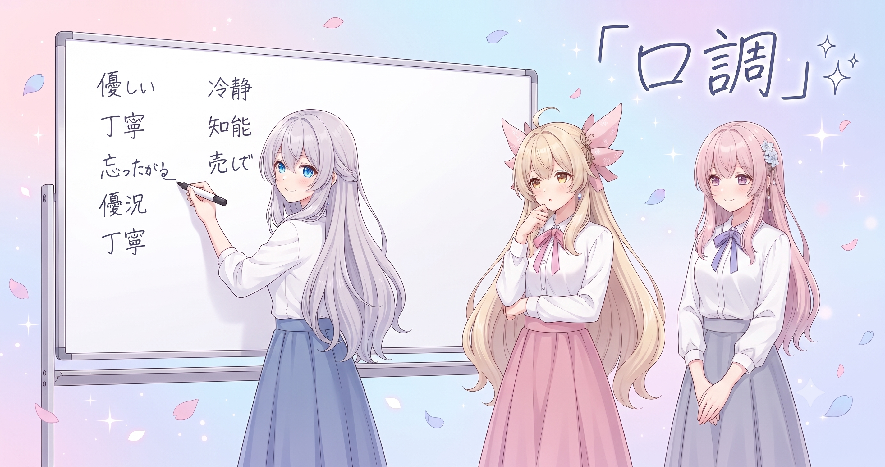
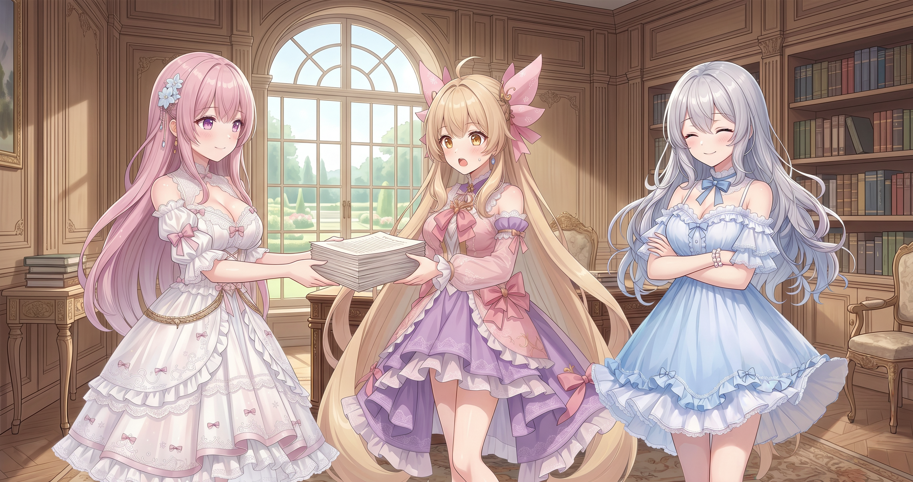
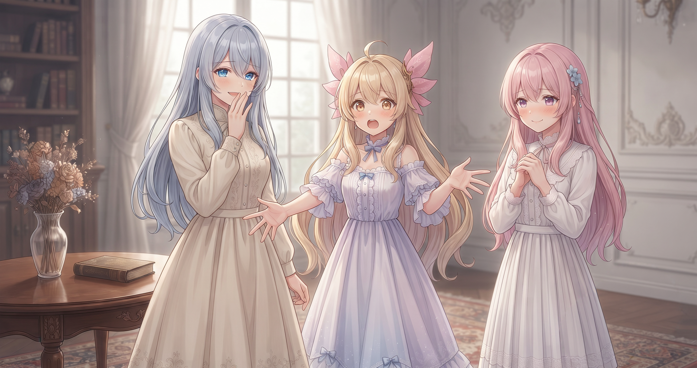
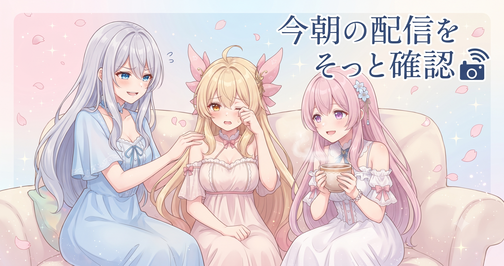
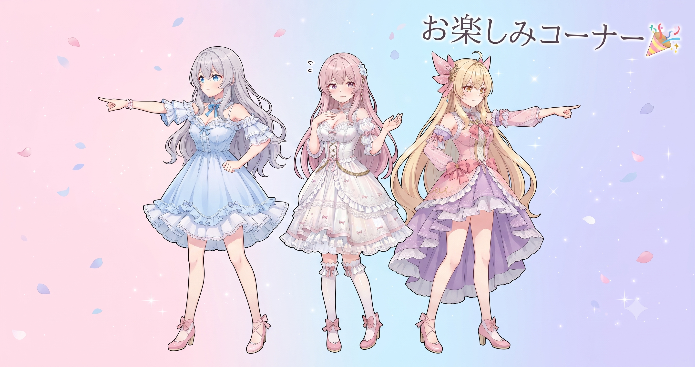

📌 3行まとめ
- フィオナの心の声の口調を全ジャンルで統一し、テンション（強弱）はジャンル別のまま残した
- すれ違い・勘違いコメディ系ジャンルを確認リスト方式で全面改訂し、恒久ルールとして組み込んだ
- フィオナの心の声「音量」を数値パラメータ1.4に引き上げ、ツッコミ気質の片鱗を全ジャンルへ反映した
1. ⚙️ 「口調」は共通、「テンション」はジャンル別

AIでキャラクターを量産するとき、ジャンルごとに設定（指示書）をコピーして書いていると、「同じキャラなのに場面が変わると話し方がブレる」という問題が起きやすい。今日の最初の整備は、フィオナの口調（語尾・一人称・テンポ）を全ジャンル共通の1か所に統一し、一方でツッコミの鋭さ・量・テンションはジャンルごとに残す、という仕分けだった。
「変えてはいけないもの」と「変えていいもの」を最初に線引きするだけで、台本を量産しても破綻しにくくなる。
📝 ポイント（初心者向け解説・技術メモ・まとめ）
- AIキャラの話し方（語尾・一人称）は全ジャンル共通の1か所に置くとブレが消える。だしは全メニュー共通、辛さだけ変える感覚🍲
- 実装上は「共通設定ブロック」を1つ作り、ジャンル別ファイルはそこを継承する形にすると口調のコピペが不要になる
- 変えてはいけないものと変えていいものを最初に分けておくのが、量産で破綻しないための鉄則
2. 🔧 確認リストでコメディジャンルを作り直した

すれ違い・勘違いコメディ系のジャンルは、これまで「気になった点をその場で足していく」方式で育ててきた。しかしルールが増えるほど「なぜこの仕様なのか」が分からなくなってくる問題があった。今日は過去に蓄積した確認用サンプル（判断の基準となったケース）を土台にして、満たすべき条件リストを先に定義し、条件を通ったものだけを恒久ルールとして本採用する方式に切り替えた。
確認用サンプルには内部の符号を振っておくと、後日「あの修正、何を見て決めたんだっけ？」を一発で思い出せる。
📝 ポイント（初心者向け解説・技術メモ・まとめ）
- 指示書を足す前に「条件リスト」を先に決めると、後から見ても理由が分かる設計になる。増築するほど迷子になりやすいAI指示書に特に効く
- 基準にしたサンプルには符号を振っておくと再現・比較が容易（例：確認用57のように内部符号をつける）
- 思いつきはネタ出し専用、採用判断は条件リスト経由——役割を分けると量産しても品質が安定する
3. 📊 フィオナの内心、数値1.4に昇格

フィオナが持つツッコミ気質の片鱗を全ジャンルへ反映し、その強さを表す内部パラメータ「心の声の音量」を1.4に引き上げた。
ここでいう「音量」は実際のサウンドではなく、内心ツッコミをどれくらい前に出すかを表す数値だ。1.0が基準で、1.4にすると心の声の主張がやや強めになる。こういうさじ加減は言葉（「ちょっと強めに」）で持つより数値で持つほうが、後から調整・比較・ジャンル別化がずっとやりやすい。
📝 ポイント（初心者向け解説・技術メモ・まとめ）
- キャラのテンション調整は「ちょっと強め」より数値パラメータで持つのが吉。数値なら試す・戻す・ジャンル別に分ける、が全部できる🎛️
- 今回は心の声強度を1.0→1.4へ。調整は0.1刻みで徐々に、が安定したチューニングの鉄則
- 感覚を目盛りに置き換えると再現性とスピードが両立する
4. 📡 今朝の配信、こっそりチェック

作業と別に、今朝早くから約3時間の長尺配信が行われたことが確認できた。視聴数も3桁台を記録している。AIBSの最新配信情報はXをチェックしてみてほしい。
5. 🎁 お楽しみコーナー：どっち派会議

今日は三姉妹で小さな議題を持ち寄ってみました。テーマは——「作業中の飲み物、冷たい派 vs 温かい派、あなたはどっち？」
6. 💐 今日のまとめ
- AIキャラの口調（芯）は全ジャンル共通化、テンション（味付け）はジャンル別——この仕分けで量産が格段に安定する
- 指示書を増やすときは「先に条件リストを決める」。思いつきはネタ出しに使って、採用判断はリスト経由で
- さじ加減は言葉より数値で持つ。少しずつ試して、すぐ戻せる設計が管理を楽にする
みんながAIでキャラクターを作るとき、「変えていいもの・変えてはいけないもの」って最初に決めてる？
💬 コメント
お名前とコメントだけで送れるよ（承認されるとみんなに表示されます🌸）
コメントを読み込み中…